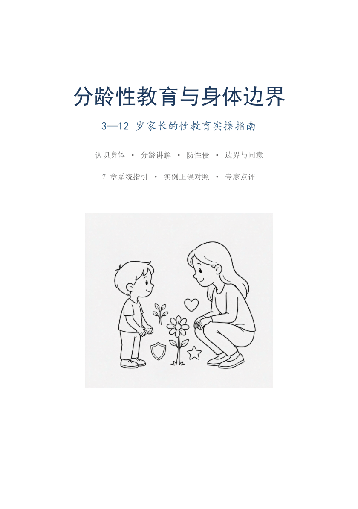
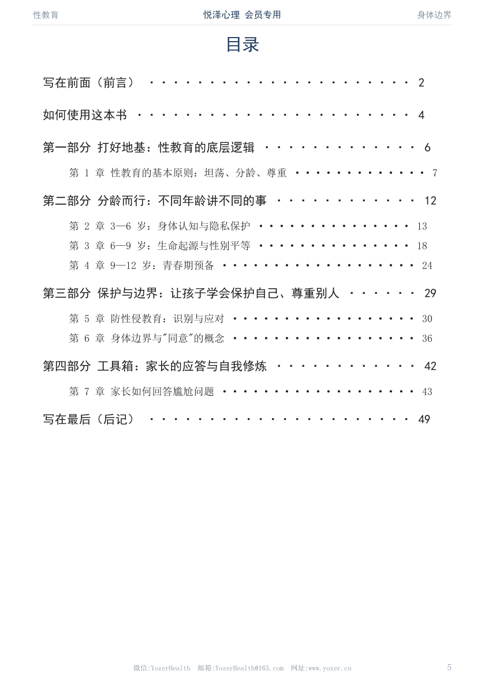
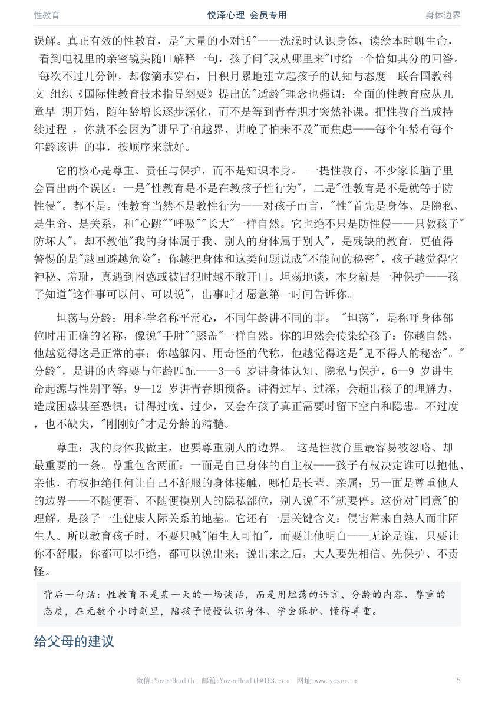
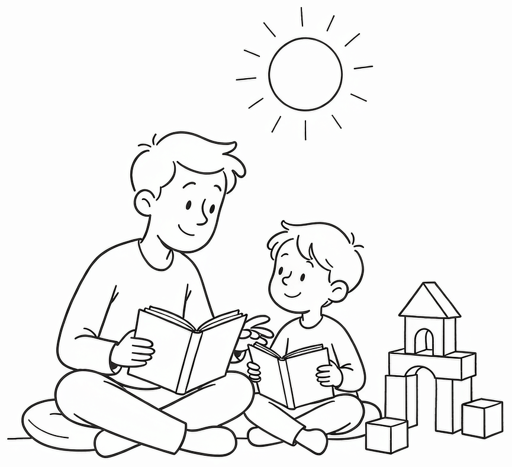

01
打好地基
1 章先讲清性教育的基本原则：坦荡、分龄、尊重——态度比话术更重要。
——3—12 岁家长的性教育实操指南
"妈妈，我从哪里来的？"孩子问出这句话时，你的窘迫，其实是可以避免的。这本书按3—6 岁、6—9 岁、9—12 岁分段，讲清每个年龄该讲什么、怎么讲——从身体认知、生命起源，到防性侵、身体边界与"同意"，每条建议都配实例情景与正误示范。

封面与内页样张来自电子书原稿
翻开这本书之前，先听听作者想说什么
"妈妈，我从哪里来的？"
"为什么他有那个，我没有？"
"男生为什么不能穿裙子？"
"什么是结婚？"
几乎每位家长，都会在某一个猝不及防的时刻，被孩子这样一句问话问住。有的家长愣在原地，有的脸一下红了，有的含糊一句"长大你就知道了"就把话岔开。我们这一代大多数人，从小没有接受过正规的性教育，于是当孩子问起，我们既没有知识储备，也没有语言模板，只剩下本能的尴尬和回避。
但回避，并不会让问题消失。性教育不是等到青春期才开始的一场"谈话"，而是从孩子出生起、贯穿成长全程的持续过程。联合国教科文组织《国际性教育技术指导纲要》明确指出：全面的性教育应从儿童早期开始，帮助孩子获得科学的知识、积极的态度、保护自己的能力和尊重他人的意识。我国近年来发布的《未成年人保护法》《家庭教育促进法》以及中小学健康教育相关要求，也都强调了对未成年人进行适龄性教育与防性侵教育的重要性。
这本书想帮家长解决三个最真实的困难。
第一，不知道"该讲什么、讲到什么程度"。性教育最忌讳"一锅端"——把不适合孩子年龄的内容提前灌进去，反而造成困惑或恐惧。本书按 3—6 岁、6—9 岁、9—12 岁三个阶段分层，明确告诉你在每个阶段"该讲什么、讲到哪里、留到哪里"，让每一次讲解都恰如其分。
第二，不知道"怎么开口、怎么回答"。很多家长不是不懂道理，而是缺少具体的话术。本书每一章都配有【实例情景】的正误对照，用真实的家庭对话示范：面对孩子的尴尬提问，怎样既不撒谎、也不过度解释；面对孩子的身体好奇，怎样坦然又守住边界。
第三，把性教育和"防性侵"混为一谈，或只讲防备不讲尊重。真正的性教育，不只教孩子"防坏人"，更要让孩子懂得：我的身体属于我，别人的身体也属于别人；我有权说"不"，也有责任尊重别人的"不"。这份对边界与同意的理解，是孩子一生健康人际关系的地基。
需要特别说明的是：性教育的核心，是尊重、责任与保护，而不是知识本身。对孩子而言，"性"首先是身体、是生命、是隐私、是关系——它和"心跳""呼吸""长大"一样自然。当我们用平常心、科学的语言、分龄的内容去谈它，孩子接收到的信息就是：这是正常的，我可以问，我值得被保护，我也应该尊重别人。这份坦荡，本身就是孩子最好的保护伞。
愿每一个孩子，都能在坦然和被尊重中，认识自己的身体，理解生命的由来，学会保护自己，也学会尊重他人。
按“打好地基—分龄而行—保护与边界—家长工具箱”四部分编排，既能系统读，也能按龄查
先讲清性教育的基本原则：坦荡、分龄、尊重——态度比话术更重要。
3—6 岁身体认知与隐私、6—9 岁生命起源与性别平等、9—12 岁青春期预备。
防性侵教育的识别与应对，以及身体边界与“同意”的概念——学会保护自己，也尊重别人。
家长如何回答那些尴尬问题——有话术，也有自我修炼。
统一的章节结构，先讲清原理，再给出能照着说的具体话术
场景化开场，让你觉得“这说的就是我家孩子”
讲清行为背后的心理与发育规律，不焦虑不指责
每条配一个实例情景，含错误示范与正确示范
点破常见误区，避免“越管越糟”
从专业角度收束，讲清原理与边界
7 章 · 附真实页码 · 点击上方按钮可快速跳转试读
以下为第 1 章完整节选，体验“场景 + 原因 + 建议 + 示范 + 点评”的编排
"妈妈，我是从你肚子里出来的吗？那我是怎么进去的？"四岁的儿子一边搭积木，一边头也不抬地问。你手里的杯子顿了一下，脸有点发烫，含糊地说："这个……长大你就知道了。""可我现在想知道嘛。"他追着问。你只好把话岔开："快吃饭，吃完饭看动画片。"孩子不再追问，可你心里却有点不安：我这样答，对吗？
其实类似的时刻，几乎每个家庭都会遇到。洗澡时，孩子盯着你的身体看；电视里出现亲密镜头，他突然问"他们在干什么"；从幼儿园回来，他一本正经地宣布"今天我和朵朵结婚了"。大人的第一反应往往是尴尬、躲闪、糊弄过去，仿佛这是什么见不得人的话题。
如果你也这样做过，请先别自责：你不是不称职，你只是没人教过你"该怎么说"。我们这一代大多数人，从小没有上过正规的性教育课，面对孩子的提问，本能地脸红、回避、转移话题，实在太正常了。但请记住一件事：孩子问这些问题，和问"天为什么是蓝的"没有本质区别——那是好奇心，不是别的什么。性教育不是某一天的"一场谈话"，而是藏在无数个这样的小时刻里的持续过程。你怎么回应这些瞬间，就在一点点塑造孩子对自己身体、对他人、对这个世界的态度。不必追求一次讲到位，只要每次都朝向坦荡与尊重，就已经走在正确的路上。
性教育不是"一场谈话"，而是贯穿长大的持续过程。很多家长把性教育想象成某个特定的日子：坐下来，关起门，郑重地"谈一次"，讲完就万事大吉。这是一个常见的误解。真正有效的性教育，是"大量的小对话"——洗澡时认识身体，读绘本时聊生命，看到电视里的亲密镜头随口解释一句，孩子问"我从哪里来"时给一个恰如其分的回答。每次不过几分钟，却像滴水穿石，日积月累地建立起孩子的认知与态度。联合国教科文组织《国际性教育技术指导纲要》提出的"适龄"理念也强调：全面的性教育应从儿童早期开始，随年龄增长逐步深化，而不是等到青春期才突然补课。把性教育当成持续过程，你就不会因为"讲早了怕越界、讲晚了怕来不及"而焦虑——每个年龄有每个年龄该讲的事，按顺序来就好。
它的核心是尊重、责任与保护，而不是知识本身。一提性教育，不少家长脑子里会冒出两个误区：一是"性教育是不是在教孩子性行为"，二是"性教育是不是就等于防性侵"。都不是。性教育当然不是教性行为——对孩子而言，"性"首先是身体、是隐私、是生命、是关系，和"心跳""呼吸""长大"一样自然。它也绝不只是防性侵——只教孩子"防坏人"，却不教他"我的身体属于我、别人的身体属于别人"，是残缺的教育。更值得警惕的是"越回避越危险"：你越把身体和这类问题说成"不能问的秘密"，孩子越觉得它神秘、羞耻，真遇到困惑或被冒犯时越不敢开口。坦荡地谈，本身就是一种保护——孩子知道"这件事可以问、可以说"，出事时才愿意第一时间告诉你。
坦荡与分龄：用科学名称平常心，不同年龄讲不同的事。"坦荡"，是称呼身体部位时用正确的名称，像说"手肘""膝盖"一样自然。你的坦然会传染给孩子：你越自然，他越觉得这是正常的事；你越躲闪、用奇怪的代称，他越觉得这是"见不得人的秘密"。"分龄"，是讲的内容要与年龄匹配——3—6 岁讲身体认知、隐私与保护，6—9 岁讲生命起源与性别平等，9—12 岁讲青春期预备。讲得过早、过深，会超出孩子的理解力，造成困惑甚至恐惧；讲得过晚、过少，又会在孩子真正需要时留下空白和隐患。不过度，也不缺失，"刚刚好"才是分龄的精髓。
尊重：我的身体我做主，也要尊重别人的边界。这是性教育里最容易被忽略、却最重要的一条。尊重包含两面：一面是自己身体的自主权——孩子有权决定谁可以抱他、亲他，有权拒绝任何让自己不舒服的身体接触，哪怕是长辈、亲属；另一面是尊重他人的边界——不随便看、不随便摸别人的隐私部位，别人说"不"就要停。这份对"同意"的理解，是孩子一生健康人际关系的地基。它还有一层关键含义：侵害常来自熟人而非陌生人。所以教育孩子时，不要只喊"陌生人可怕"，而要让他明白——无论是谁，只要让你不舒服，你都可以拒绝，都可以说出来；说出来之后，大人要先相信、先保护、不责怪。
建议一：把性教育当成"日常小对话"，抓住生活里的"可教时刻"。
别把性教育攒成一次郑重其事的"谈话"。越正式，孩子越觉得"这是件大事"，反而紧张。更自然的做法，是抓住生活里的"可教时刻"：洗澡时认认身体部位，读绘本时聊聊生命，电视里出现亲密镜头时平静解释一句，孩子提问时给一个刚好够用的答案。每次几分钟，轻描淡写，却是在一遍遍告诉孩子"这件事可以自由谈论"。你可以给自己定个原则：孩子问，我就答；答完不追问、不追着讲一大堆。
建议二：用科学名称和平静语气，让"身体语言"在家庭里正常化。
身体部位没有"不能说的名字"。像教"手肘""膝盖"一样，教孩子用正确的名称称呼生殖器官等部位。很多家长卡在这里，觉得难以启齿——但你的难为情，恰恰会让孩子学到"这是羞耻的"。请练习用平稳的语气说出来，不带笑、不挤眉弄眼、不压低声音。当科学名称变成家里随口可说的普通词汇，孩子遇到问题时才敢准确表达"我哪里不舒服""谁碰了我哪里"，这本身就是重要的安全能力。记住：你有多坦荡，孩子就有多坦然。
建议三：按年龄适量讲解，回答前先听懂孩子真正想问什么。
不同年龄，讲不同的事，既不抢跑也不留白。要给的答案"刚刚好"：先反问一句"你为什么会想到这个呀"，往往能问出孩子真正想知道的那一小点。孩子问"我从哪里来"，有时只是想确认"我是爸爸妈妈的孩子"，并不需要一个完整的生命起源讲解——那是更大一点才需要展开的内容。这个年龄，回答点到为止、不撒谎、不编故事即可。请记住：你给的是"够用就好"的答案，不是"越多越好"的课本。
建议四：把"尊重与同意"落到日常，不强迫孩子表演亲亲抱抱。
尊重不是讲出来的，是孩子在日常里被对待的方式教出来的。一个重要场景就是"表演亲亲抱抱"：家里来了客人，长辈逗孩子"叫阿姨，亲一口"，孩子不愿意，大人却说"别害羞，听话"。这看似小事，实则传递了"你的身体不由你做主"。请替孩子挡掉这类要求："他现在不想抱，我们尊重他。"同时教孩子：想被抱要先问对方"我可以抱你吗"，别人说"不"就要停。当孩子既拥有"拒绝的权利"，又懂得"征得同意"，尊重才真正长进他心里。
把性教育攒成"一次大谈话"。郑重其事关起门讲一通，孩子只会紧张，远不如日常里的小对话有效。
用代称和"嘘声"处理身体问题。越神秘，孩子越觉得羞耻；用科学名称平常心说，才是坦荡。
只讲"防陌生人"，忽略熟人。侵害常来自熟人，要教孩子"无论谁让你不舒服，都可以拒绝并说出来"。
抢跑式灌输。把不适合年龄的内容提前讲，超出理解力，只会造成困惑恐惧；分龄、适量才对。
孩子说"被碰了"先质问。"你是不是误会人家了？"这类话会让孩子从此闭嘴。请记住：先相信、先保护、不责怪。
回避孩子的问题。"长大你就知道了""别问这个"——越回避越危险，只会把孩子推向同伴和网络去找答案。
性教育，说到底是家长和孩子之间关于"身体、生命与关系"的一场长期对话。它考验的不是家长的知识储备，而是面对这些问题时能否坦荡、能否尊重、能否守住"分龄"的分寸。当你能用平静的语气说出科学的名称，当孩子问起时你能给一个"刚刚好"的回答，当你愿意替孩子挡掉一次不情愿的拥抱——你传递的信息远比任何一次说教都有力：这件事是自然的，你可以问，你值得被保护，你也应该尊重别人。
也要提醒：如果你发现自己对这类话题有强烈的羞耻或抗拒，一提就想躲，这往往与你自己成长中未被好好回应的经历有关。不必苛责自己，可以先从"和孩子一起读一本科学的身体绘本"开始，借助第三方的语言慢慢练习。同样，当孩子在身体或边界问题上出现明显异常的信号——例如反复出现与年龄不符的行为模仿、对隐私边界完全无感、或透露被他人不当接触——请及时寻求专业儿童心理或医务人员的帮助；一旦涉及侵害，立即保护孩子、保留证据、报警（110）并联系未成年人保护机构，不私下"大事化小"，更不责怪孩子。你今天的坦荡，是孩子一生安全感与边界感的起点。
# 第二部分 分龄而行：不同年龄讲不同的事
—— 以上为节选，完整内容见电子书 ——
真实排版预览 · A5 竖版 · 黑白简笔画插图



图片为文档内嵌样张，仅作版式展示
| 项目 | 说明 |
|---|---|
| 书名 | 分龄性教育与身体边界 |
| 副标题 | 3—12 岁家长的性教育实操指南 |
| 适读年龄 | 3—12 岁 |
| 篇幅 | 7 章 · 约 3.7 万字 · 49 页 |
| 版本 | A5 版（148×210mm） |
| 格式 | PDF 电子书 |
| 插图 | 8 张黑白简笔画题图 |
| 结构 | 四部分 · 每章五步 · 实例正误对照 |